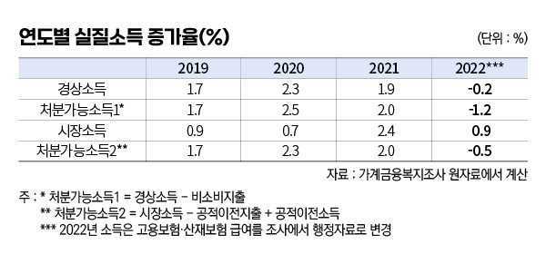
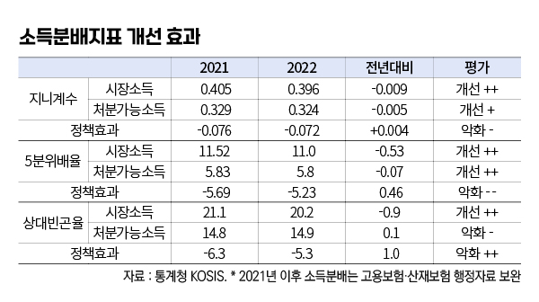
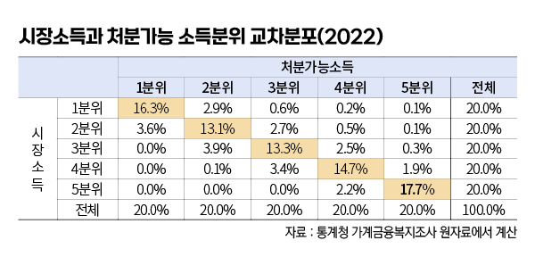
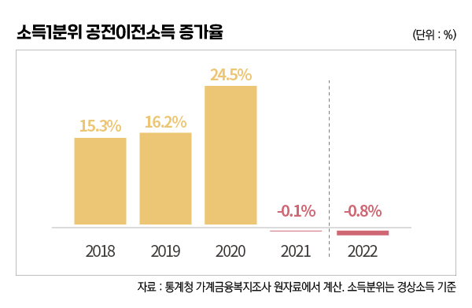

박영삼의 통계로 보는 노동
“소득분배 개선에 정부 역할은 없었다”
가계금융복지조사 분석결과…“실질소득 감소에도 하위 20% 2년 연속 공적이전소득 줄어”
통계청이 한국은행, 금융감독원과 함께 조사하는 가계금융복지조사 원자료가 최근 공개됐다. 소득은 2022년 말 기준이고 자산과 부채는 2023년 3월 기준이었다.
사실 이미 대부분의 조사결과 내용은 공식 보도자료와 언론을 통해 공개됐다. 2022년 가구 평균소득은 6천762만원으로 전년대비 4.5% 증가했고 세금과 연금·사회보험료, 가구 간 이전지출과 대출이자 등 비소비지출을 차감한 처분가능소득은 5천482만원으로 전년대비 3.7% 증가했다.

여기에 추가하자면 근로소득과 사업소득, 재산소득, 사적이전 등 시장소득은 5천957만원으로 5.6% 증가한 것으로 나타났고, 세금과 사회보험료를 빼고 정부로부터 받은 공적이전소득을 더한 또 다른 ’처분가능소득(소득분배지표를 계산할 때 사용)’은 5천731만원으로 4.3% 증가했다.
하지만 2022년 소비자물가 상승률 5.1%를 감안하면 실질소득 증가율은 마이너스를 기록했다. 실질시장소득(+0.9%)을 제외하고는 실질경상소득(-0.2%), 실질처분가능소득(-1.2%), 실질처분가능소득2(-0.5%) 모두 일제히 감소한 것으로 나타난다.
코로나 사태의 한복판에 있었던 2020년에도 연간기준으로는 플러스 증가를 보였던 가계실질소득이 마이너스를 기록한 것은 물가상승과 함께 비소비지출에 포함되는 이자 지급액(+18.3%)이 크게 증가한 반면 정부로부터 받는 공적이전소득(-4.7%)이 크게 감소했기 때문이다.

특히 공적이전소득은 2021년에 이어 2년 연속 감소하고 있어 더욱 문제이다. 공적이전소득에는 연금지급액이 포함되기 때문에 베이비부머세대의 은퇴와 함께 평균액이 빠르게 늘어나는 것이 정상이다. 다만, 2021년의 감소는 전년도의 코로나 위기 구제지원에 따른 기저효과의 영향으로 볼 수 있으나 2022년의 연이은 감소는 소득분배 악화의 적신호로 볼 수 있다.
기획재정부는 “공식분배지표인 지니계수와 5분위배율 모두 개선되었다”고 평가했으나 이것은 시장소득분배가 개선된 것의 파급 영향일뿐 정부정책에 의한 효과로 볼 수는 없다.
소득분배 개선효과는 당해연도의 시장소득 분배지표와 처분가능소득 분배지표의 차이로 정의된다. 실제로 2022년 처분가능소득 지니계수는 2021년의 0.329에서 0.324로 개선했으나 이것은 시장소득 기준 지니계수가 0.405에서 0.396으로 개선한 것에 비하면 정부의 정책효과는 오히려 퇴보한 것으로 볼 수 있다. 5분위배율도 전년대비 지표는 개선했으나 시장소득 불평등이 축소된 효과보다는 처분가능소득의 분배개선 효과는 그에 못미친다. 상대빈곤율의 경우 시장소득 빈곤율은 줄어들었지만(21.1%→20.2%) 처분가능소득에서는 빈곤율이 오히려 증가(14.8%→14.9%)한 것으로 나타난다. 빈곤완화에 대한 정부 정책의 기여가 없는 것으로 충분히 해석할 수 있다.

2022년은 문재인 정부와 윤석열 정부의 교체 시기이기 때문에 특정한 정권의 문제로만 볼 수는 없다. 그러나 코로나 사태, 주택가격 상승에 이어 고물가 고금리로 인한 저소득 가구의 어려움이 가중되는 상황에서 현 정부 들어 실시한 감세와 재정지출 억제의 본격적인 영향은 2023년 이후 소득분배지표에 나타날 것이기 때문에 앞으로가 더욱 우려되는 상황이다.
가계금융복지조사 원자료를 분석해보면 우리나라 가구 중 시장소득 하위 20%에 속한 가구는 처분가능소득에서도 대부분 하위 20%에 속하고, 상위 20%의 시장소득을 얻는 가구는 처분가능소득에서도 상위 20%에 그대로 머무는 비중이 압도적으로 높다. 그래서 저소득 계층의 소득을 지원함으로써 빈곤의 악화를 막고 계층 간 격차를 완화하는 정부 역할이 매우 중요하다.

그러나 2021년 이후 공적이전소득의 재분배 역할은 축소되고 있으며 앞으로 더욱 그럴 것이 우려된다. 소득1분위에 대한 공적이전소득이 2년 연속 감소하고 있는 것을 심각한 문제로 받아들여야 한다. 국제적 환경과 인플레로 인해 통화정책의 제약이 큰 상황에서 재정의 역할마저 손 놓고 있어서는 안 되는 상황이다.

고려대 노동문제연구소 노동데이터센터장 (youngsampk@gmail.com)